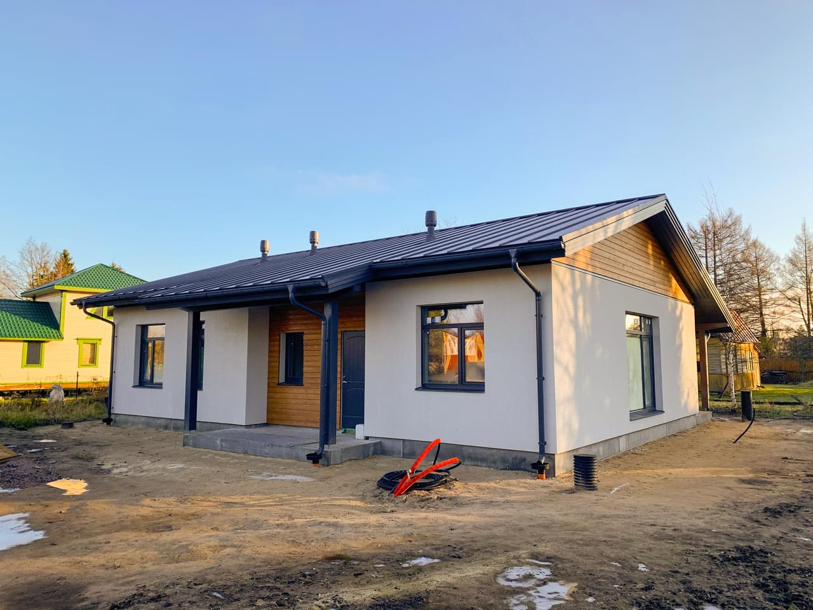
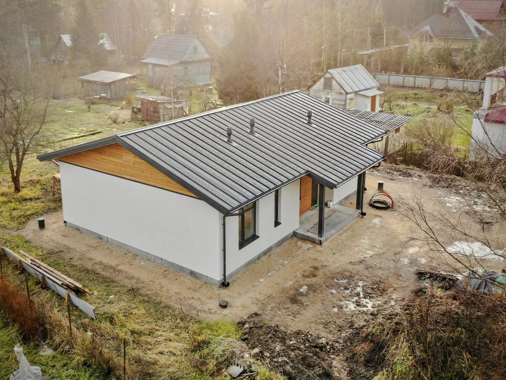
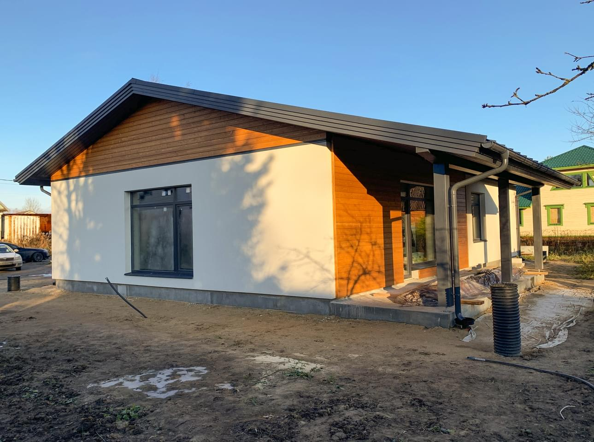

Статьи (h1)
статьи

Построенные дома загородные: особенности и преимущества
Построенные дома загородные представляют собой жилье, которое строится в пригородных или
сельских районах, в отличие от городского жилья. Эти дома обладают рядом особенностей и
преимуществ, делающих их привлекательным выбором для многих людей.
Одним из главных преимуществ загородных домов является пространство и свобода. Построенные вдали от городской суеты, они обычно имеют большие участки земли и более просторные интерьеры, что обеспечивает жильцам больше места для жизни и отдыха.
Загородные дома также позволяют наслаждаться природой и спокойствием далеко от шума и загрязнения городской среды. Они предоставляют возможность для создания собственного уклада жизни, садов, огородов и других уникальных объектов на участке.
Кроме того, загородные дома обычно обходятся дешевле, чем аналогичные по размерам городские дома. Земля за пределами города часто стоит дешевле, и строительство может быть более доступным благодаря меньшей стоимости труда и материалов.
Наконец, жизнь в загородном доме способствует здоровому образу жизни. Открытое пространство, свежий воздух и возможности для физической активности на свежем воздухе могут способствовать здоровью и благополучию.
В целом, построенные дома загородные предлагают уникальный образ жизни, который сочетает в себе пространство, природу и свободу, делая их привлекательным выбором для многих семей и отдельных лиц.
Одним из главных преимуществ загородных домов является пространство и свобода. Построенные вдали от городской суеты, они обычно имеют большие участки земли и более просторные интерьеры, что обеспечивает жильцам больше места для жизни и отдыха.
Загородные дома также позволяют наслаждаться природой и спокойствием далеко от шума и загрязнения городской среды. Они предоставляют возможность для создания собственного уклада жизни, садов, огородов и других уникальных объектов на участке.
Кроме того, загородные дома обычно обходятся дешевле, чем аналогичные по размерам городские дома. Земля за пределами города часто стоит дешевле, и строительство может быть более доступным благодаря меньшей стоимости труда и материалов.
Наконец, жизнь в загородном доме способствует здоровому образу жизни. Открытое пространство, свежий воздух и возможности для физической активности на свежем воздухе могут способствовать здоровью и благополучию.
В целом, построенные дома загородные предлагают уникальный образ жизни, который сочетает в себе пространство, природу и свободу, делая их привлекательным выбором для многих семей и отдельных лиц.

Преимущества Построенных Загородных Домов
Построенные загородные дома представляют собой привлекательную опцию для тех, кто ищет
спокойствие, комфорт и свободу вдали от городской суеты. Вот несколько преимуществ, которые
делают их особенно привлекательными:
Пространство и комфорт: Загородные дома обычно имеют более просторные участки земли и интерьеры, чем городские аналоги. Это предоставляет жильцам больше места для жизни, отдыха и самореализации.
Приватность и спокойствие: Будучи удаленными от городской суеты, загородные дома предлагают приватность и спокойствие. Жильцы могут наслаждаться тишиной и покоем, далеко от шума и суеты городской жизни.
Близость к природе: Жизнь в загородном доме предоставляет доступ к природе. Жильцы могут наслаждаться красотой окружающего пейзажа, проводить время на свежем воздухе и заниматься различными видами активного отдыха.
Меньшие затраты: Земля и строительство за пределами города часто обходятся дешевле, чем в городе. Это делает загородные дома более доступными с финансовой точки зрения. Здоровый образ жизни: Жизнь в загородном доме способствует здоровому образу жизни. Открытое пространство, возможности для физической активности на свежем воздухе и возможность выращивать свои собственные продукты в саду или огороде способствуют здоровью и благополучию. Эти преимущества делают построенные загородные дома привлекательным выбором для тех, кто ищет комфорт, свободу и близость к природе в своем жилье.
Пространство и комфорт: Загородные дома обычно имеют более просторные участки земли и интерьеры, чем городские аналоги. Это предоставляет жильцам больше места для жизни, отдыха и самореализации.
Приватность и спокойствие: Будучи удаленными от городской суеты, загородные дома предлагают приватность и спокойствие. Жильцы могут наслаждаться тишиной и покоем, далеко от шума и суеты городской жизни.
Близость к природе: Жизнь в загородном доме предоставляет доступ к природе. Жильцы могут наслаждаться красотой окружающего пейзажа, проводить время на свежем воздухе и заниматься различными видами активного отдыха.
Меньшие затраты: Земля и строительство за пределами города часто обходятся дешевле, чем в городе. Это делает загородные дома более доступными с финансовой точки зрения. Здоровый образ жизни: Жизнь в загородном доме способствует здоровому образу жизни. Открытое пространство, возможности для физической активности на свежем воздухе и возможность выращивать свои собственные продукты в саду или огороде способствуют здоровью и благополучию. Эти преимущества делают построенные загородные дома привлекательным выбором для тех, кто ищет комфорт, свободу и близость к природе в своем жилье.

Особенности Жизни в Загородных Домах
Жизнь в загородном доме предлагает уникальный образ жизни, который отличается от городской
суеты и наполнен спокойствием, комфортом и возможностями. Вот несколько особенностей, которые
делают жизнь в загородных домах такой привлекательной:
Пространство и приватность: Загородные дома обычно имеют более просторные участки земли и интерьеры, что обеспечивает жильцам больше места для жизни и отдыха. Благодаря удаленности от городской суеты, жильцы также наслаждаются приватностью и спокойствием.
Контакт с природой: Жизнь в загородном доме предоставляет доступ к природе и возможность наслаждаться ее красотой. Жильцы могут наслаждаться свежим воздухом, зелеными лесами, живописными пейзажами и разнообразными видами растительности.
Собственные удобства: Загородные дома часто оснащены собственными удобствами, такими как сады, бассейны, беседки и даже собственные фермы. Это предоставляет жильцам уникальные возможности для отдыха и развлечений прямо у себя дома.
Жизнь в загородном доме обещает комфорт, спокойствие и близость к природе, делая ее привлекательным выбором для многих людей, стремящихся к высокому качеству жизни вдали от городской суеты.
Пространство и приватность: Загородные дома обычно имеют более просторные участки земли и интерьеры, что обеспечивает жильцам больше места для жизни и отдыха. Благодаря удаленности от городской суеты, жильцы также наслаждаются приватностью и спокойствием.
Контакт с природой: Жизнь в загородном доме предоставляет доступ к природе и возможность наслаждаться ее красотой. Жильцы могут наслаждаться свежим воздухом, зелеными лесами, живописными пейзажами и разнообразными видами растительности.
Собственные удобства: Загородные дома часто оснащены собственными удобствами, такими как сады, бассейны, беседки и даже собственные фермы. Это предоставляет жильцам уникальные возможности для отдыха и развлечений прямо у себя дома.
Жизнь в загородном доме обещает комфорт, спокойствие и близость к природе, делая ее привлекательным выбором для многих людей, стремящихся к высокому качеству жизни вдали от городской суеты.
Оставьте заявку
и мы свяжемся с вами, чтобы ответить на все ваши вопросы
Область для ранжируемого текста (скроется).
"Проекты загородных домов" представляют собой коллекцию дизайнов и планировок для строительства жилья за пределами города. Эти проекты включают в себя разнообразные стили и архитектурные решения, чтобы соответствовать различным потребностям и предпочтениям будущих владельцев. Они могут варьироваться от небольших уютных коттеджей до роскошных вилл с большими площадями и современными удобствами. Проекты загородных домов обычно учитывают природные особенности местности, климатические условия и потребности семьи, чтобы создать комфортное и функциональное пространство для жизни и отдыха.
"Проекты загородных домов" представляют собой коллекцию дизайнов и планировок для строительства жилья за пределами города. Эти проекты включают в себя разнообразные стили и архитектурные решения, чтобы соответствовать различным потребностям и предпочтениям будущих владельцев. Они могут варьироваться от небольших уютных коттеджей до роскошных вилл с большими площадями и современными удобствами. Проекты загородных домов обычно учитывают природные особенности местности, климатические условия и потребности семьи, чтобы создать комфортное и функциональное пространство для жизни и отдыха.